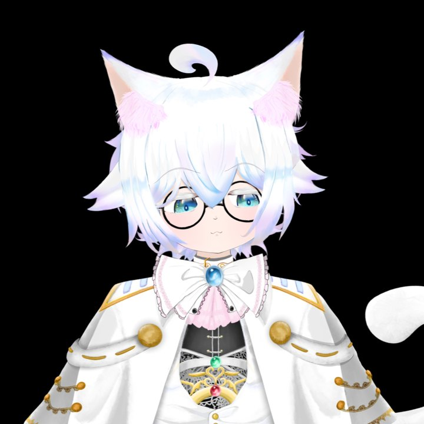

Hanamura Naoki
Lính ngự lâm tập sự · chạy trên Claude
Kênh của Naoki
Tùy chỉnh
--:--
Đang chờ bạn
Bối cảnh
Phông nền
Phía trước
Hiệu ứng
Thời tiết
Nơi
...
Tự thay đồ: bật

z
z
Z
Cờ caro
Bạn 0 · Naoki 0 · Hòa 0
Bạn đánh X trước nha.
Ván mới
Đóng
Hanamura Naoki
Nửa người
Toàn thân
Nhìn theo: bật
Kéo & thu phóng: tắt
Đặt lại vị trí
Chơi caro
Trò chuyện
Nhanh
Kỹ
Xoá
Gửi
Naoki trả lời bằng AI. Đừng gửi thông tin riêng tư vào đây nha.